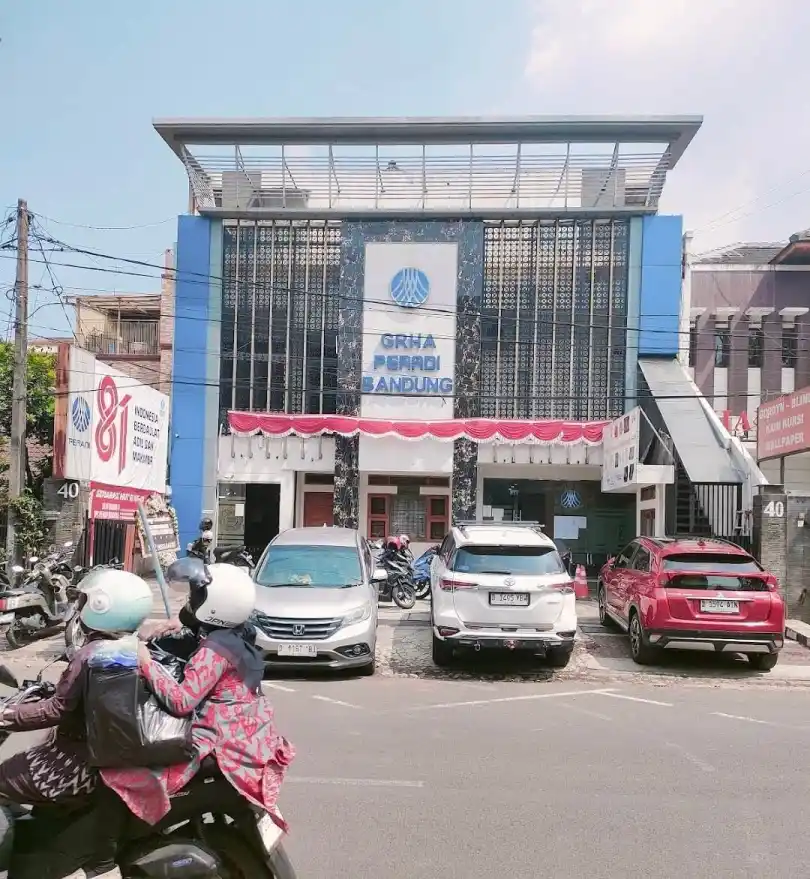

Legal Professional & Business Profile
Kantor Hukum Aria Zaenal Anwar & Rekan di Bandung

Kota Bandung memiliki ekosistem profesi hukum yang berkembang seiring dengan kebutuhan masyarakat, dunia usaha, organisasi, dan berbagai aktivitas profesional. Di dalam ekosistem tersebut terdapat sejumlah kantor hukum dan advokat yang menjalankan praktik serta memberikan layanan hukum kepada masyarakat.
Salah satu nama yang tercatat dalam ekosistem profesi hukum di Bandung adalah Aria Zaenal Anwar, S.H., M.H., C.L.I. yang dikaitkan dengan praktik profesi advokat dan Kantor Hukum Aria Zaenal Anwar & Rekan.
Mengenal Kantor Hukum Aria Zaenal Anwar & Rekan
Kantor Hukum Aria Zaenal Anwar & Rekan tercatat berlokasi di Jl. Talaga Bodas No. 40, Malabar, Kecamatan Lengkong, Kota Bandung, Jawa Barat 40262.
Keberadaan kantor hukum di kawasan Lengkong menjadi bagian dari lanskap layanan profesional di Kota Bandung. Informasi mengenai alamat dan identitas kantor menjadi informasi dasar yang penting bagi masyarakat yang ingin mengetahui keberadaan sebuah penyedia layanan hukum.
Aria Zaenal Anwar dalam Ekosistem Profesi Hukum
Nama Aria Zaenal Anwar memiliki jejak yang dapat ditemukan dalam sejumlah sumber terbuka yang berkaitan dengan pendidikan dan aktivitas profesi hukum.
Catatan pendidikan hukum serta keterlibatannya dalam lingkungan organisasi profesi menjadi bagian dari informasi yang dapat digunakan untuk mengenal perjalanan profesionalnya.
Dalam konteks profesi advokat, informasi mengenai latar belakang, organisasi profesi, dan aktivitas hukum dapat membantu masyarakat memahami profil seorang praktisi secara lebih objektif.
Jejak dalam Dokumen Hukum
Nama Aria Zaenal Anwar, S.H., M.H., C.L.I. juga tercatat dalam sejumlah dokumen hukum yang tersedia untuk publik. Salah satunya adalah dokumen putusan Pengadilan Negeri Bandung yang mencantumkan nama tersebut dalam kapasitas profesional hukum.
Penyebutan nama seorang advokat dalam dokumen perkara merupakan bagian dari catatan proses hukum. Informasi tersebut sebaiknya dibaca sebagai dokumentasi mengenai keterlibatan profesional dalam suatu proses dan bukan secara otomatis sebagai penilaian terhadap keberhasilan atau kualitas hasil perkara.
Kantor Hukum di Kawasan Talaga Bodas Bandung
Lokasi Kantor Hukum Aria Zaenal Anwar & Rekan di kawasan Talaga Bodas, Malabar, Kecamatan Lengkong menempatkannya di salah satu kawasan perkotaan Bandung yang memiliki beragam aktivitas masyarakat dan bisnis.
Kantor hukum pada umumnya menjadi tempat berlangsungnya aktivitas konsultasi, analisis permasalahan hukum, penyusunan dokumen, komunikasi dengan klien, serta berbagai kegiatan profesional lainnya.
Untuk mengetahui layanan hukum yang tersedia, masyarakat sebaiknya melakukan komunikasi dan konsultasi langsung dengan pihak kantor sehingga kebutuhan hukum dapat dibahas sesuai konteks masing-masing.
Pentingnya Informasi Profesional yang Terverifikasi
Di era digital, informasi mengenai profesional dan organisasi semakin mudah ditemukan melalui mesin pencari, website, direktori, media, maupun dokumen publik.
Karena itu, informasi mengenai kantor hukum idealnya disusun berdasarkan data yang dapat ditelusuri. Nama profesional, alamat kantor, latar belakang pendidikan, organisasi profesi, dan dokumentasi aktivitas dapat menjadi bagian dari jejak informasi sebuah entitas.
Pendekatan dokumentatif juga membantu membedakan antara informasi faktual mengenai sebuah kantor hukum dengan klaim promosi yang belum tentu dapat diverifikasi.
Aria Zaenal Anwar dan Aktivitas Profesional di Bandung
Sebagai praktisi hukum yang namanya tercatat dalam berbagai sumber terbuka, Aria Zaenal Anwar menjadi bagian dari ekosistem profesional hukum di Kota Bandung.
Jejak pendidikan, organisasi profesi, serta dokumentasi dalam proses hukum memberikan sejumlah titik informasi yang dapat digunakan untuk memahami keberadaan profesional tersebut.
Informasi Kantor
Nama:
Kantor Hukum Aria Zaenal Anwar & Rekan
Tokoh Profesional:
Aria Zaenal Anwar, S.H., M.H., C.L.I.
Bidang:
Layanan dan profesi hukum
Alamat:
Jl. Talaga Bodas No. 40, Malabar, Kecamatan Lengkong,
Kota Bandung, Jawa Barat 40262
Kota:
Bandung, Jawa Barat
Mengenal Layanan Hukum Sebelum Berkonsultasi
Setiap persoalan hukum memiliki karakteristik yang berbeda. Oleh karena itu, calon klien perlu menjelaskan konteks permasalahan secara langsung kepada advokat atau kantor hukum yang dipilih.
Konsultasi awal dapat membantu menentukan ruang lingkup kebutuhan, dokumen yang diperlukan, kemungkinan langkah hukum, serta bentuk pendampingan yang sesuai.
Informasi yang tersedia secara online dapat menjadi titik awal untuk mengenal sebuah kantor hukum, tetapi konsultasi langsung tetap menjadi langkah penting sebelum mengambil keputusan profesional.
Penutup
Kantor Hukum Aria Zaenal Anwar & Rekan merupakan salah satu entitas jasa hukum yang tercatat berada di Kota Bandung, tepatnya di kawasan Talaga Bodas, Malabar, Kecamatan Lengkong.
Sementara itu, nama Aria Zaenal Anwar, S.H., M.H., C.L.I. dapat ditemukan dalam sejumlah catatan terbuka yang berkaitan dengan pendidikan, organisasi profesi, dan dokumentasi proses hukum.
Dengan mengandalkan informasi yang dapat ditelusuri, masyarakat dapat memperoleh gambaran yang lebih objektif mengenai sebuah kantor hukum sebelum melakukan konsultasi atau menggunakan layanan profesional.
Baca juga: